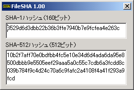

動作環境：
WINDOWS95・WINDOWS98・WINDOWSNT・WINDOWSMe・WINDOWS2000・WINDOWSXp。
開発環境：
Borland C++ Builder Professional Version5.0
説明
指定ファイルのSHA-1ハッシュ値、および、SHA-512ハッシュ値を表示します。
このソフトの実行には、同梱されている、とつげき東北作成のVNCrypt.DLLが必要です。
ダウンロード
本製品はフリーソフトです。
使用前に必ず利用規約に同意してください。同意せずに利用・配布・再配布等をすることを一切禁止します。
このプログラムを使用・配布したことによって生じたいかなる損害にも、とつげき東北は責任を負いません。使用者の責任で使うこと。
ソフトの使い方

起動するとこのウインドウが出ますので、SHAハッシュ値を知りたいファイルをドラッグドロップしてください。
上の画面のように、SHAハッシュ値が計算されます。
SHAとは？
SHAとは、SecureHashAlgorithm（セキュアハッシュアルゴリズム）の略です。
任意の長さのデータから、そのデータに対応する160ビット（SHA-1の場合）または512ビット（SHA-512の場合）のデータを計算する計算方法のことです。
（他にもSHA-256などがあります）
この計算は不可逆（計算結果から元のデータを推測できない）であり、しかもほんの1ビットの差が、計算結果をでたらめにします。
このような性質を利用して、データの改ざんチェックやオンライン認証、電子署名、暗号用途の擬似乱数等に応用されています。
SHAのロジックに関する詳しい説明はこちらにあります（英語）。
当然ですが、SHA-1よりもSHA-512の方がビット数が多く、より安全です。